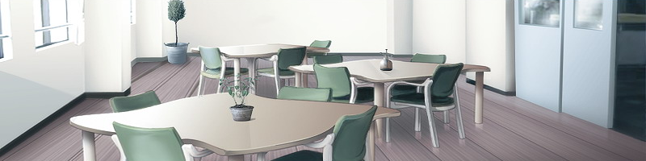
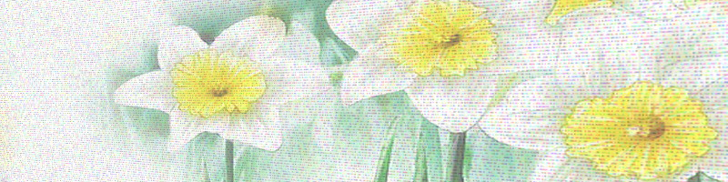

2005年 冬 7F走廊的一侧，护士值班室的对面 有一处发挥着休闲室作用的场所  在这间冷清的屋子里 摆放着几张沙发和折叠椅，以及一台大屏幕电视机 28英寸的屏幕中 还在播放着无聊的新春特别节目 有一位女孩子 正在漫不经心地看着那无聊的电视节目 瘦小的身体，粉红色的睡衣 手腕上，佩戴着与我相同的白色手环 垂到腰间的长发给我留下了深刻的第一印象。 「我说···这节目有意思吗？」 我随意问道 因为环境太过冷清，身不由己地和她搭上了话 「不···」 女孩简短地回答道 甚至没有转头看我一眼 她似乎根本没有把我放在心上 还是一脸无聊地看着那电视节目 ···既然这么无聊，还不如别看了··· 尽管心中这样想着 但我也同样在折叠椅上坐了下来 然后，与她一起傻盯着电视机 没有其他事情可做，也没有其他事情能做 我们默不作声地看着电视··· 荧光屏中出现的，是那些每年必演的新春节目 无聊的口技、毫无新意的搞怪 六岁时就看穿了的魔术···诸如此类的东西 偶尔，也会传出主持人充满傻气的大笑声 那笑声在这明朗宽敞的房间里干涩地回荡着。 「你···」 女孩突然开口 但她的视线依然没从电视上挪开 「···你是第几次了？」 「···什么第几次了？」 「是第几次···来到7楼了？」 「抱歉，我不明白你在问什么」 「是吗···原来你还是第一次啊」 虽然我不明白她在说什么 但她似乎自说自话地找到了答案 「既然这里没有其他人···那也就是我的义务了···」 「···义务？」 「这是不成文的规则···」 她点头向我解释道，有些事情必须向初次来到这里的人说明 这是存在于7楼的一条不成文的规则 我还是不明白她在说些什么 但她并不理会我满头的雾水 自顾自地缓缓开口说道 「那么，仔细听我说···」 ············ 她缓缓地解说着 她的解说，与来到这里之前医生对我解释的内容多少有些不同 按照那位医生的事务性解说 待在这里是为了等待医疗技术的进步 同时也是为了调养心理状态 乍听起来，他的说法似乎很有道理 但按照女孩的话来讲，那些都只不过是安慰人的套话 7楼是这所医院之中 唯一一处不进行治疗活动的地方 这里只是等待生命燃尽的地方 她这样解释道 我相信了她的说法，因为我也有着相同的预感。 「我已经是第2次了···」 「第2次是什么意思？」 「···是第2次来到这里了」 她继续解说道 即便如此 也不是让病人到死为止都要一直留在7楼 尽管无法医治的结果不会变 但状态较好的时候，也会让病人们回到家里去 不过，当病情恶化时，又要再次回到这里来 ···就是在这样的来来回回中等待着死亡 或者是在家中···或者是在7楼··· 二者之中，一定会在其中一处迎来死亡 她所说的第2次 就是这个意思 「我只说1次···」 「接下来的话要仔细听好···」 ···她凝视着乏味的电视画面继续说道 她所说的 并不是熄灯时间之类，那种入院患者们时常交流的话题 她告诉我的是完全不同的事情 「第3次暂时出院的时候，就做好心理准备吧。 不会再有第4次了，已经无法再回到家里去了」 「假如想逃走的话，不要到A车站去，而要到B车站去」 「什么也不要吃，这是快捷的手段。 同时也是减少家人负担的最佳方法」 ···全部都是这类沉重的话题 或许，这就是在7楼的暂居者们之间··· 在即将面对死亡的人们之间 积年累月而流传下来的「心得」吧 「你刚才所说的『义务』，就是指这个吗？」 「嗯，是啊···」 「今后，你也将它传达给初次来到这里的人吧···」 说完，她站起了身来 扬起的长发掠过我的鼻尖 「我现在该去测体温了···」 说完，她转过身去 离开了休闲室 冷清的房间中 只剩下了电视中传来的笑声，以及摆放在窗边的白色花朵 直到离去，她也没有看过我一眼2005年1月10日 7F 主人公几天后 新春特辑终于结束 中学也即将开学的时候 这一天，我们依然在休闲室中呆呆地看着电视 「真无聊啊···」 「是啊···」 尽管嘴上这么说 但我们仍然紧盯着电视的画面 「我说，这里总是这个样子吗？」 「···我不明白你在问什么」 「啊，我是说这里总是这么冷清吗？」 除了护士、医生和勤杂工外 我就没见有其他人来过···啊，忘了还有各自的家属 「是刚过新年的原因吗？」 「···你想知道原因吗？」 「啊，不···我不是这个意思···」 「···那我就不说了」 我们偶尔才会有这种短暂的交流 微风从15cm的窗口吹进屋内 时而会在摇动她那头长发的同时 摇曳窗边的那盆白色花朵 我们每天都看着无聊的电视节目 毫无作为地打发着时间 「哎呀，你们俩都在这里啊？」 走进来的是一位中年护士 根据偶尔瞄到的护士值班室的景象 我推测她大概就是7楼的护士长吧 「怎么样？ 濑津美，体温不高吧？」 「···没事的，不高···」 ···濑津美 这大概就是她的名字 「今后不要再私自跑到外边去了」 「·····」 「知道了吗？ 大家都会很担心的」 「···用不着你来担心···」 「哎，你怎么可以这样说呢」 「真是的，最近的孩子可真是让人没办法啊」 护士就这样喋喋不休地唠叨了很长时间 但是她···这个叫做濑津美的女孩 却完全没有去听那些大道理 就好像完全没感觉到那啰嗦的护士存在一般 直直地盯着眼前无聊的电视画面 「过一会儿可不要忘记去验血哦」 说完，护士便转身返回了值班室 「我说你啊···」 「啊···可以叫你濑津美吧？」 她的手腕上卷着白色的塑料手环 我看着写在上面的姓名和血型问道 「·······」 「你怎么了？ 濑津美？」 「为什么要直呼我的名字？」 「啊？」 「你明明年纪比我小···」 「喂，你为什么就敢肯定我年纪比你小啊？」 「不为什么···只是这样感觉而已」 「年纪小」而感到气愤 只是，无论从哪方面看，我总要比她大上5~6岁才对 所以，我掏出口袋里的那张驾照，摆在了她的面前 「怎么样，我可是已经20岁了哦。」 「·······」 「那么，你还是比我小···」 她朝驾照瞥了一眼说道 「喂，我可一点也看不出来啊」 「但又有什么关系···我只比你稍大一点点的」 她依然是面无表情地轻声说道 她的双眼，似乎仍然紧盯在无聊的电视画面上 又似乎是在眺望着遥远的地方··· 清晨的体温检查结束后 我躲过护士们的眼睛，偷偷地溜进了电梯 到达1楼后，我故意选择了门诊大厅的门 就这样大摇大摆地走出了医院 我的目的地不是A车站 而是之前被告知的较远的B车站 我并不是想逃出去 ···7楼或是自家··· 至今为止还没有人在其他的地方死去·· 这是我之前听到的说法 并且，那个叫濑津美的女孩 似乎也多次去过B车站 所以，尽管不知道为什么 我忽然想去看一看那个地方 「反正也不会有监视员什么的跟着我吧···」 尽管心里这样想着，但我们毕竟是7楼的居民 与其他的住院者多少有点区别 我怀着各种各样的猜测 走在晨光下那通往车站的道路上 赶去上班或去上学的人们都在急匆匆地赶路 只有我在慢悠悠地迈着步子 25分钟后，我终于来到了车站前 换算一下，走了相当于大约公交车开4站路的里程 「···好多人啊」 这是我看到B车站后的第一感觉 尽管穿在身上的睡衣很引人注目··· 但是，只要在这里买一张列车票 我就可以毫无困难地逃到任何地方去了吧 尽管不明白她为什么不让我去A车站 而是向我推荐B车站 但是，如果真的想逃出去的话，应该是轻而易举的事吧 记得她也曾经来过很多次 那么，为何她至今还留在7楼呢·· 清晨的车站前 望着那些来去匆匆的人们 我的心头不禁生出了这个疑问 这天夜里。熄灯时间过后 我迟迟无法入睡，又无心去阅读那些已经看腻了的漫画书 于是便独自在大楼里闲逛了起来 一般来说，在熄灯后闲逛的话，一定会被护士训斥 但我们这些7楼居民在这一点上反而比较自由 熄灭了灯光 一片漆黑的休闲室 在这里，我找到了她 「唷，今天在看外边的风景吗？」 「···嗯」 她的身体隐藏在窗边的阴影里 尽管回应了我，却依然在凝望着窗外 于是我向她说起了今天的事情 「对了···今天早上，我到车站去了」 「按照你的建议，到B车站去了」 「是吗···」 但是，她的语气还是与平时没什么两样 因为她也去过几次 我本以为她会有什么反应的·· 这么说来，她之所以至今还留在这里 是因为从一开始就没有逃出去的打算吗 「···我很快就可以回去了···」 她突然开口说道 她的话 似乎正是对我心中疑问的解答 「不过，下一次就是第3次了···」 「···或许，我们不会再见面了」 「嗯···啊，是啊···」 可以回去了， 指的恐怕就是暂时出院吧。 在这7楼中， 出院入院的轮回，最多只有3次。 而且对我们这些年轻人来说， 病情恶化的速度要比老年人快得多，所以来这里的次数会更少。 因此，她才会说或许不会再见面了。 「···你愿意选择哪一边？」 「···选择什么？」 「···会选择在哪一边死去？」 「······」 突然听到「死」这个词， 我不由得搪塞了起来。 「我也不知道···还从来没想过这个」 「···是啊···你还只是第1次啊」 她有些悲哀地说道。 当然， 我也不会永远待在这里。 也会像大家一样， 重复着入院与出院的轮回，渐渐地衰弱下去，终有一天··· 最终，我或者是选择7楼， 或者是选择那满是虚伪笑容的家。 「我···不喜欢家···」 「不过，也不喜欢这里···」 「···那么，你打算怎么办？」 「········」 「···没什么···也不会有什么大不了的···」 「只是想靠着自己的双腿，走到能够到达的地方去···」 「我说···」 如果真的想逃的话，明明随时都可以逃掉。 但她却依然留在这里。 这样说起来··· 「···莫非，你有什么可以去的地方吗？」 「·······」 「你想···劝我留下来吗？」 「诶···？」 「还是···想随我一起来呢？」 「啊，不，我不是这个意思···」 「···那么···就不要问了」 她望着窗外，淡淡地说道。 依旧没有转头看我一眼。 但是，在这一刻··· 我从她毫无表情的侧影中，看到了一丝悲哀。 第一次来到7楼的我被告知， 第3次的暂时出院将会是最后一次。 而她，即将迎来第2次出院。 尽管我还是无法体会到其中的现实感··· 但是总有一天， 我也会带上那样的一副表情吗··· 凌晨，开始下起了雨。 雨点偶尔也会化作冰晶或雪花， 不厌其烦地在窗外飞舞。 我在老地方看着电视。 与往日一样，7楼显得非常冷清。 「···有趣吗？」 「不，很无聊···」 她从对面走了过来。 简短地交谈过一句后， 她静静地坐在了旁边的折叠椅上。 今天，我们又坐在一起看起了无聊的电视。 ···她的心情一定和我一样吧。 没有其他事情可做，也没有其他事情能做。 「啊······」 忽然，她盯着画面叫出了声来。 「怎么了？」 「···没什么」 尽管嘴里一如往常说着「没什么」 但可以看出，她的反应与平时大不相同。 因此，我也好奇地朝电视画面看去。  屏幕上正呈现出山水的风景。 在美丽的山野中，错落有致地生长着各种花草树木。 其中尤为耀眼的，是一些星星点点的白色花朵。 ···那是一种我见过的花。 与床边摆放着的那盆白色花朵非常相似。 「莫非，它们是同一种花吗？」 「····」 「你看，和这个很像吧？」 我一边说，一边来回指着屏幕与窗边。 「···不是」 「唉，是吗？」 「科属是相同的···但严格说起来不是同一种···」 她瞥了窗边的花一眼， 把目光重新转向了电视。 说实话，尽管她说两者是不同的， 但我实在看不出它们有什么区别。 而且，无论它们是相同的还是不同的， 对我来说这本身不是什么重要的问题。 吸引我的，是平时决不会主动参与交谈的女孩。 很少见地说了不少话。 所以，我也试着将话题进行下去。 「你很熟悉这方面的事吗？」 「···不」 「是吗？ 不过，我可是一点也看不出有什么区别啊」 开放在屏幕中的白色花朵。 以及摆放在窗边花瓶中的花朵。 我来回看着它们，喃喃说道。 「那，这是不是兰花或者百合呢？」 「········」 「你看，它们都是白色的嘛」 「······」 尽管没什么兴趣，但我还是继续说着。 可是··· 她却如同往常一样闭口不言了。 只是像从前那样， 呆呆地注视着电视屏幕。 当我感到她不会再开口说话， 正要将目光转回电视的时候··· 「···narcissu···」 「诶···？」 「这种花叫做narcissu···」 说着···她第一次转过头来面对着我。 她摇动着齐腰的长发··· 指着电视上的花朵，凝视着我。 卷在手腕上的白色塑料手环，映衬着她雪白的肌肤， 如同画面中的花朵一般。 从她那第一次凝视着我的表情中··· 我似乎看到了一丝淡淡的微笑。
第一章 7F